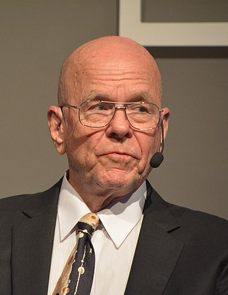
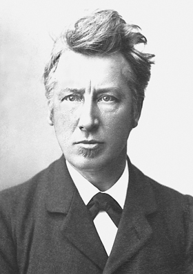
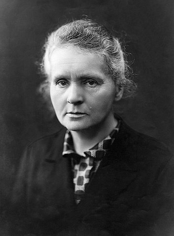
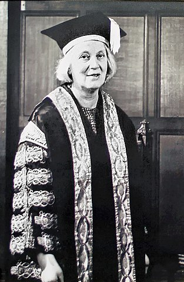

TROCHĘ O NOBLISTACH!
Frederick Sanger 1958 i 1980
 Frederick Sanger (ur. 13 sierpnia 1918 w Rendcomb, zm. 19 listopada 2013 w Cambridge) – angielski biochemik.
Frederick Sanger (ur. 13 sierpnia 1918 w Rendcomb, zm. 19 listopada 2013 w Cambridge) – angielski biochemik.
Jest pierwszą osobą, która dwukrotnie otrzymała Nagrodę Nobla w dziedzinie chemii.
Opracował pionierską metodę zastosowaną do ustalenia struktury białek, a zwłaszcza insuliny, za co w roku 1958 otrzymał pierwszą Nagrodę Nobla.
Następnie zajął się kwasami nukleinowymi.
W roku 1975 opracował enzymatyczną metodę sekwencjonowania DNA zwaną „metodą Sangera” lub „metodą dideoksy”.
W 1980 za tę pracę przyznano mu nagrodę Nobla po raz drugi.
Karl Barry Sharpless 2001 i 2022

Karl Barry Sharpless (ur. 28 kwietnia 1941 w Filadelfii) – chemik amerykański, drugi dwukrotny laureat Nagrody Nobla z chemii (2001 i 2022).
Jego badania wykorzystano do syntezy leków nasercowych (tzw. beta-blokerów).
Za prace te został uhonorowany Nagrodą Nobla w 2001 r.
(druga połowa nagrody przypadła wspólnie Williamowi Knowlesowi i Ryōjiemu Noyoriemu).
W 2022 ponownie otrzymał Nagrodę Nobla w dziedzinie chemii, wspólnie z Carolyn Bertozzi i Mortenem Meldalem, za rozwój chemii „click” i chemii bioortogonalnej.
Jacobus Henricus van 't Hoff 1901

Jacobus Henricus van ’t Hoff (ur. 30 sierpnia 1852 w Rotterdamie, zm. 1 marca 1911 w Steglitz) – holenderski chemik, laureat pierwszej Nagrody Nobla w dziedzinie chemii w 1901 roku.
Był trzecim z siedmiorga dzieci Jakuba Henryka van ’t Hoffa i Alidy Jakuby Kolff.
W 1869 rozpoczął studia na Politechnice w Delfcie. Dyplom uzyskał w 1871.
Decyzję o poświęceniu się czysto naukowej karierze podjął po wakacyjnej pracy w cukrowni.
Perspektywa zostania technologiem żywności była dla niego zbyt przytłaczająca.
Nagrodę nobla zdobył za odkrycie praw dynamiki chemicznej i ciśnienia osmotycznego.
Maria Skłodowska-Curie 1911

Maria Salomea Skłodowska-Curie (ur. 7 listopada 1867 w Warszawie, zm. 4 lipca 1934 w Passy) – polsko-francuska uczona zajmująca się fizyką doświadczalną i chemią fizyczną, podwójna noblistka – laureatka Nagrody Nobla z fizyki (1903) i chemii (1911).
W 1891 Maria Skłodowska wyjechała z Królestwa Polskiego do Paryża, by podjąć studia na Sorbonie (w XIX wieku kobiety nie mogły studiować na ziemiach polskich); następnie rozwinęła tam swoją karierę naukową.
Była prekursorką nowej gałęzi chemii – radiochemii.
Do jej dokonań należą: rozwinięcie teorii promieniotwórczości, technik rozdzielania izotopów promieniotwórczych oraz odkrycie dwóch nowych pierwiastków – radu i polonu.
Z jej inicjatywy prowadzono także badania nad leczeniem raka za pomocą promieniotwórczości.
Irene Joliot-Curie 1935
 Irène Joliot-Curie (ur. 12 września 1897 w Paryżu, zm. 17 marca 1956 tamże) – francuska fizykochemik, laureatka Nagrody Nobla w dziedzinie chemii, członkini Prezydium Honorowego Polskiego Komitetu Wyzwolenia Narodowego we Francji w 1944 r.
Irène Joliot-Curie (ur. 12 września 1897 w Paryżu, zm. 17 marca 1956 tamże) – francuska fizykochemik, laureatka Nagrody Nobla w dziedzinie chemii, członkini Prezydium Honorowego Polskiego Komitetu Wyzwolenia Narodowego we Francji w 1944 r.
Córka Polki Marii Skłodowskiej-Curie i Francuza Pierre’a Curie. W 1934 r. wraz z mężem, Frédérikiem Joliot-Curie, wykonała zdjęcie komory mgłowej, na którym uwieczniła zjawisko tworzenia się par elektron-pozyton (pozytonium) z fotonów.
W 1935 r. otrzymała wraz z mężem Nagrodę Nobla z chemii w uznaniu za odkrycie sztucznej promieniotwórczości – syntezy nowych nuklidów promieniotwórczych.
Dorothy Crowfoot Hodgkin 1964

Dorothy Mary Crowfoot Hodgkin (ur. 12 maja 1910 w Kairze, zm. 29 lipca 1994 w Shipson-on-Stour) – angielska biochemiczka, krystalograf, laureatka Nagrody Nobla w dziedzinie chemii w 1964 roku za wyznaczenie struktury penicyliny i witaminy B12.
W latach 1928–1932 studiowała chemię i krystalografię na Uniwersytecie w Oksfordzie.
Przez następne dwa lata prowadziła w Laboratorium Cavendisha w Cambridge badania krystalograficzne nad sterolami, peptydami i aminokwasami. Następnie ponownie pracowała na Uniwersytecie w Oksfordzie.
W 1937 roku obroniła doktorat na Uniwersytecie w Cambridge pod kierunkiem profesora Bernala.
W 1960 roku została profesorem. Była członkiem The Royal Society.
Ada Jonath 2009
 Ada E. Jonath (hebr. עדה יונת, ang. Ada Yonath; ur. 22 czerwca 1939 w Jerozolimie)
Jej rodzice wyegimrowali ze Zduńskiej Woli do Palestyny w 1933 roku.
Ada E. Jonath (hebr. עדה יונת, ang. Ada Yonath; ur. 22 czerwca 1939 w Jerozolimie)
Jej rodzice wyegimrowali ze Zduńskiej Woli do Palestyny w 1933 roku.
Studiowała na Uniwersytecie Hebrajskim w Jerozolimie, gdzie uzyskała bakalaureat w 1962 roku oraz tytuł magistra biochemii w 1964. Stopień doktora uzyskała w 1968 roku w Instytucie Naukowym Weizmana, jej praca doktorska dotyczyła krystalografii. Odbyła staże podoktorskie w Carnegie Mellon University (1969) oraz MIT (1970).
W 2007 otrzymała Nagrodę Wolfa w dziedzinie chemii, w 2009 Nagrodę Nobla w dziedzinie chemii za badania nad strukturą i funkcją rybosomów (wspólnie z Venkatramanem Ramakrishnanem i Thomasem Steitzem).
Jest też laureatką Medalu Marii Skłodowskiej-Curie przyznanego jej w 2011 r. przez Polskie Towarzystwo Chemiczne, a w 2015 r. otrzymała tytuł doktora honoris causa Uniwersytetu Medycznego w Łodzi.